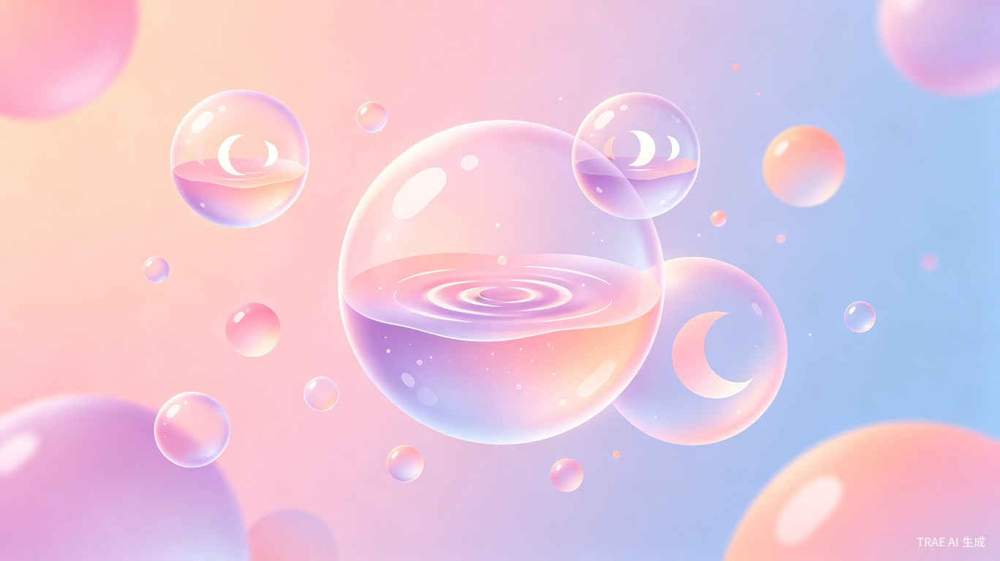
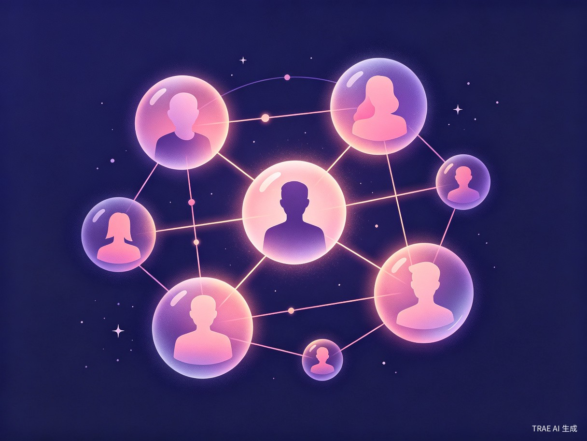
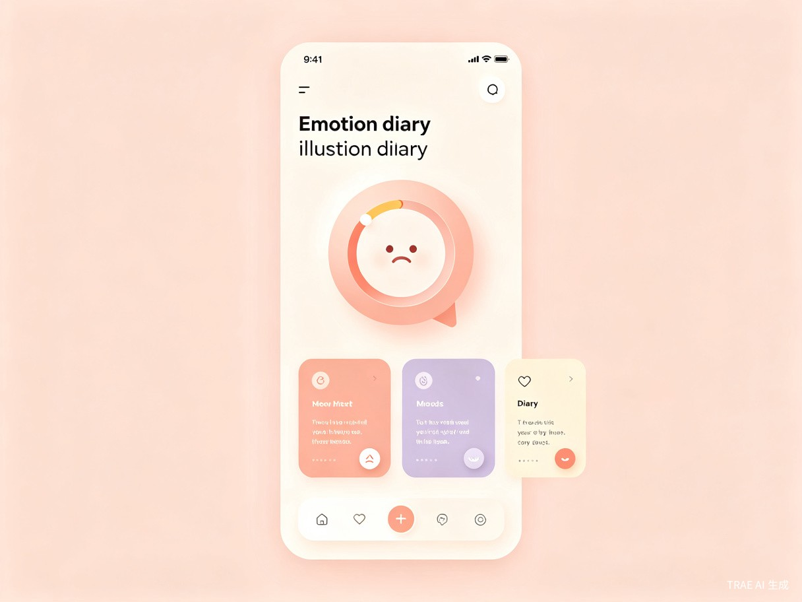

关于产品
什么是 CycleBubble
CycleBubble（周期泡泡）是一款基于女性生理周期与长期自我记录数据的情绪可视化AI产品。
产品通过用户自主记录的月经周期信息（6-12个月），结合周期规律分析模型，推测用户当前所处的生理阶段——月经期、卵泡期、排卵期、黄体期——并将其转化为"情绪状态可视化"。
系统以"泡泡"为视觉隐喻，展示用户当前的周期状态与情绪倾向，让用户更直观地理解自己当下的情绪变化来源。

看见你的周期，理解你的情绪
基于女性生理周期与自我记录数据的情绪可视化AI产品。通过"泡泡"隐喻，将不可见的周期变化转化为可感知的视觉体验，帮助每一位女性理解自己当下的情绪来源。
探索产品CycleBubble（周期泡泡）是一款基于女性生理周期与长期自我记录数据的情绪可视化AI产品。
产品通过用户自主记录的月经周期信息（6-12个月），结合周期规律分析模型，推测用户当前所处的生理阶段——月经期、卵泡期、排卵期、黄体期——并将其转化为"情绪状态可视化"。
系统以"泡泡"为视觉隐喻，展示用户当前的周期状态与情绪倾向，让用户更直观地理解自己当下的情绪变化来源。
有月经周期记录习惯的女性用户，希望更深入理解自身身体节律
希望理解自身情绪波动来源的人群，寻找情绪背后的生理线索
对自我情绪管理与身体状态感知有需求的人，追求身心平衡
用"泡泡状态"表达当前周期阶段概率，将抽象的生理周期状态转化为视觉结构，让用户直观感知自身状态变化。
用户导入6-12个月生理周期记录，系统分析周期长度与变化规律，输出当前周期阶段的"可能性分布"。
示例输出：黄体期 65% / 排卵期 20% / 卵泡期 15%
用户每天记录情绪与事件（自由文本），系统基于语义相似性与时间周期进行匹配，在匿名范围内连接"经历相似情绪的人"。
核心创新：只依赖"人与人之间的表达相似性"，让用户通过"相似经历"获得情绪理解与支持。

不同周期阶段的情绪倾向分布，帮助用户理解情绪波动背后的生理规律。
将抽象的生理周期状态转化为视觉结构，让用户直观感知自身状态变化。泡泡的颜色、大小、流动速度都在传递信息。
不是判断情绪对错，而是提供一种解释框架：情绪 = 周期 + 环境 + 个体差异的综合结果。
完全基于用户表达的匿名语义系统，不依赖搜索引擎和外部知识库，只依赖"人与人之间的表达相似性"。
不提供外部搜索结果，不抓取互联网内容，所有匹配基于用户自主表达
不提供医学诊断或确定性结论，所有判断均为概率与趋势提示
所有匹配基于匿名用户语义数据，强调隐私与表达安全性
所有情绪判断均为概率与趋势提示，帮助用户建立自我认知框架

每天打开 CycleBubble，你可以像写便签一样记录今天的情绪和事件。
比如你今天感到异常悲伤，点开泡泡才发现——原来正处于黄体期，这个阶段本身就更容易产生低落情绪。于是你写下："今天被领导批评了，但也许我的反应比平时更大。"
通过语义共鸣系统，你可能会收到一位匿名用户的回应——她也曾经历类似情境，并分享了她的应对方式。这就是灵魂的相遇。
"情绪 = 周期 + 环境 + 个体差异的综合结果。CycleBubble 不试图预测情绪，而是帮助用户理解：情绪可能是周期与身体状态的一种自然表现。"